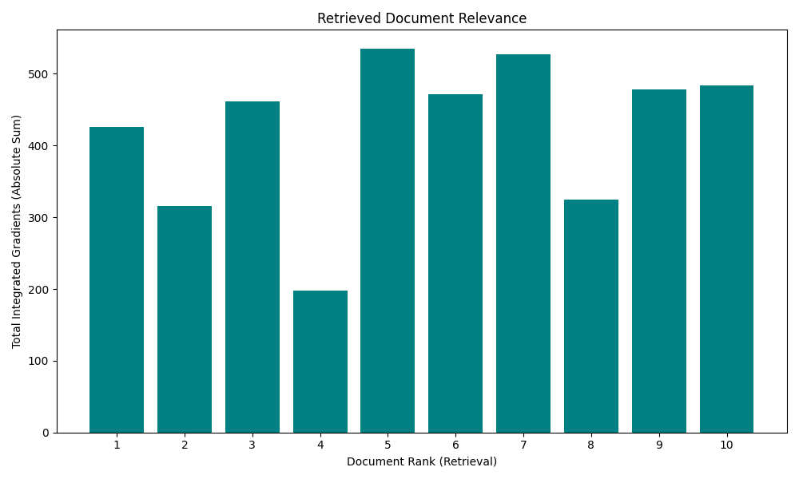
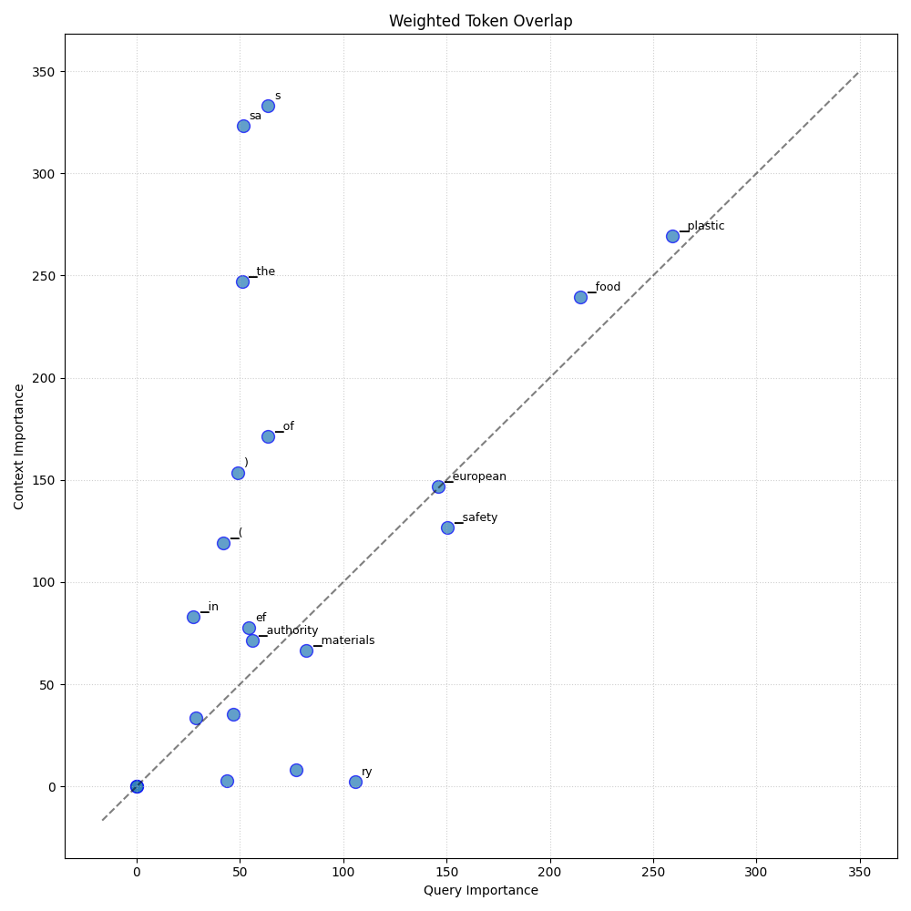

Analysis: query_114
Query: ▁que ry : ▁What ▁is ▁the ▁role ▁of ▁European ▁Food ▁Safety ▁Authority ▁( EF SA ) ▁in ▁the ▁restriction s ▁for ▁plastic s ▁materials ?
Document Relevance

Weighted Overlap

Token Comparison

Documents
Document 1 (Click to Expand)
▁# ▁EF SA ▁guide ▁on ▁appro val ▁of ▁substance s ▁in ▁plastic ▁FC M s ▁On ▁March ▁22, ▁2021 , ▁the ▁European ▁Food ▁Safety ▁Authority ▁( EF SA ) ▁announced ▁the ▁publication ▁of ▁an ▁administrative ▁guide ▁on ▁how ▁to ▁submit ▁applications ▁for ▁appro val ▁of ▁substance s ▁“ to ▁be ▁used ▁in ▁plastic ▁and ▁intended ▁to ▁come ▁into ▁contact ▁with ▁food .” ▁The ▁guide ▁describe s ▁among ▁others ▁the ▁“ procedure ▁and ▁associated ▁time lines ▁for ▁handling ▁applications ▁on ▁substance s ▁to ▁be ▁used ▁in ▁plastic ▁food ▁contact ▁materials , ▁the ▁different ▁possibili ties ▁to ▁interact ▁with ▁EF SA ▁ , ▁and ▁the ▁support ▁initiative s ▁available ▁from ▁the ▁preparation ▁of ▁the ▁application ▁( pre - sub mission ▁phase ) ▁to ▁the ▁ adoption ▁and ▁publication ▁of ▁EF SA ’ s ▁scientific ▁opinion .” ▁This ▁administrative ▁guidance ▁will ▁be ▁updated ▁as ▁needed ▁to ▁reflect ▁relevant ▁changes ▁to ▁the ▁sector al ▁legisla tion ▁and / or ▁guidance ▁documents . ▁Read ▁More ▁EF SA ▁( Mar ch ▁22, ▁2021 ). ▁“ ▁Administrativ e ▁guidance ▁for ▁the ▁preparation ▁of ▁applications ▁on ▁substance s ▁to ▁be ▁used ▁in ▁plastic ▁food ▁contact ▁materials ▁”